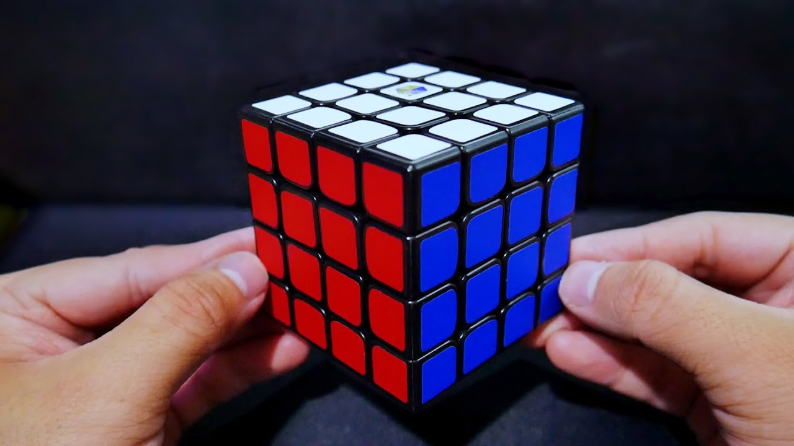
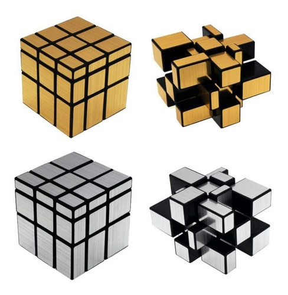
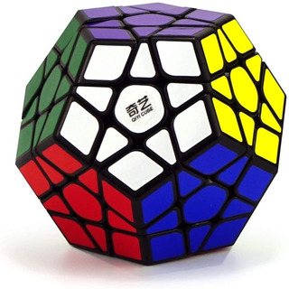
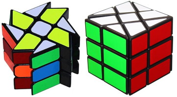
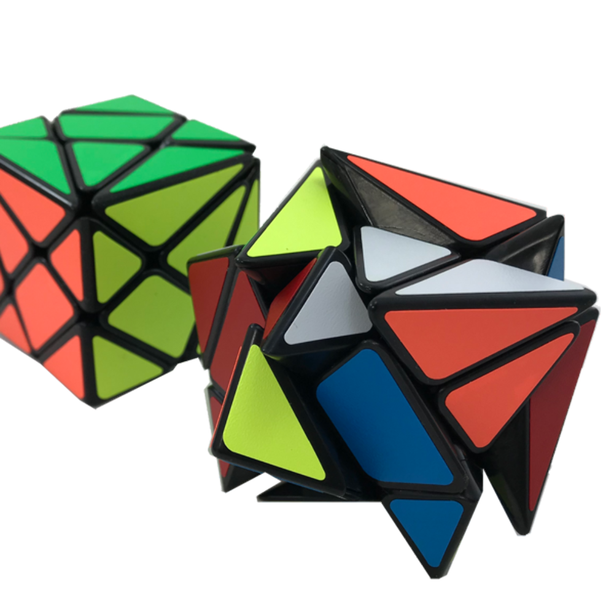

4x4
El Cubo Rubik 4×4 es un Cubo con un excelente diseño, se trata de un 4×4 de fondo
negro transparente con los colores Outline, es decir, el color en cada cuadro solo viene
bordeado y es tipo Tiled, es decir, no es de pegatinas, sino que el color viene incrustado en en
la piezas en forma de cuadro.

Cubo espejo o mirror cube
El Mirror 3×3 es una de la modificaciones mas populares del Cubo 3×3. La clave es
que en vez de ordenar colores, tendremos que trabajar con formas.
El tamaño de cada pieza es diferente, lo que hace que al rotar las capas, el cubo se deforme y
obtengas resultados realmente extraños. Cuando alguien acostumbrado a manejar un 3×3 coge este
cubo por primera vez, resulta muy divertido. Aunque la dinámica sea la misma, con un Mirror 3×3
pareces tener entre manos algo totalmente distinto.

Megamix
Megaminx es un rompecabezas tridimensional de tipo mecánico similar al cubo de
Rubik pero con forma de dodecaedro regular. Tiene un total de 50 piezas móviles.

Windmill cube
El YJ Windmill Cube V2 es una modificación del cubo Fisher, es básicamente lo
mismo que el Fisher Cube pero con el corte desfasado consiguiendo un divertido cubo de exóticos
patrones, el corte de este cubo hace que en las cara laterales parezca un 2x2x3, en este cubo
las aristas juegan el papel de las esquinas y las esquinas juegan el papel de las aristas,
además los centros tienen orientación lo que dificulta su resolución frente al clásico Cubo de
Rubik.

21x21
Es uno de los cubos mas grandes del mundo, y uno de los mas dificiles tambien.
Normalmente tiene una media de 8 horas minimas para armarse
.jpg)
Axis cube
QiYi Axis Cube es una divertida modificación del 3×3 que se resuelve teniendo en
cuenta la forma y el color de las piezas.
Cuenta con un robusto mecanismo interno y gira muy bien nada más sacarlo de la caja. Las locas
formas que puede llegar a adoptar al mezclarlo lo hacen más divertido y desafiante.
